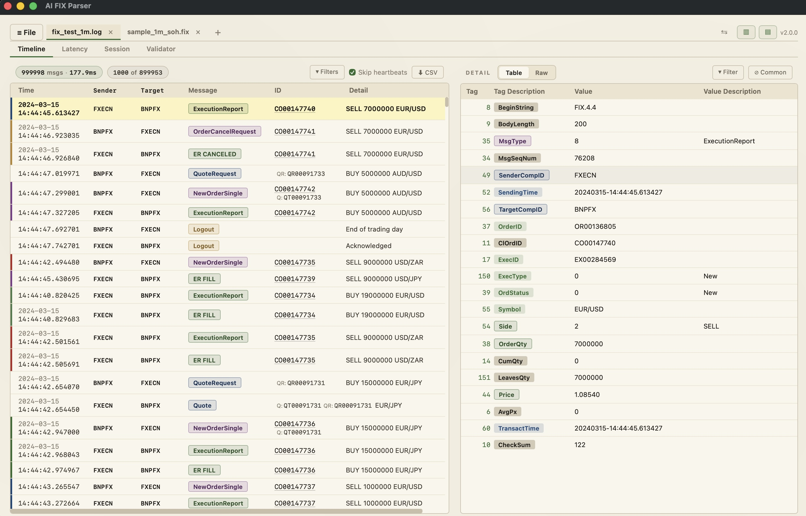
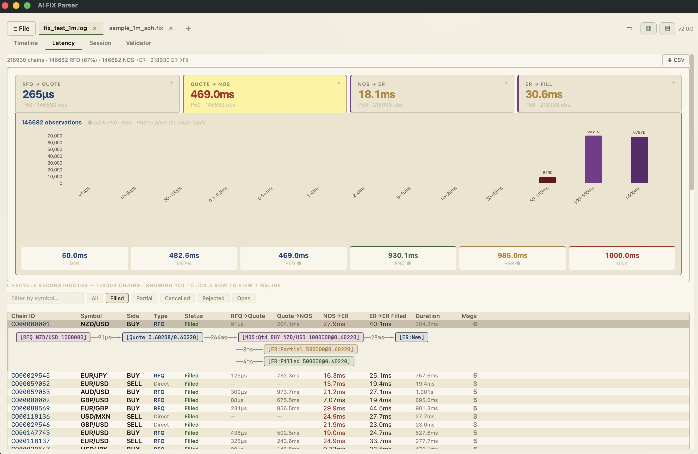
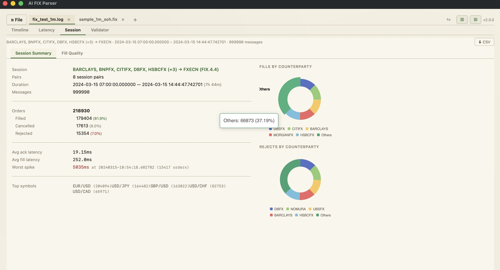
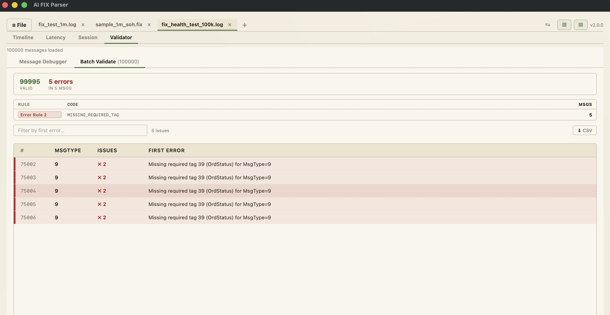

Free FIX Protocol Parser & Debugger · macOS & Windows
Free, offline FIX protocol parser and debugger for algo traders and FIX engine developers. Parse FIX 4.0, 4.1, 4.2, 4.4, 5.0, 5.0 SP1 and 5.0 SP2 messages instantly. Works with QuickFIX, QuickFIX/J, Artio FIX, B2BITS FIXIOM. Built in native Rust. 100% offline — your FIX log data never leaves your machine.
Free forever · No sign-up · 100% offline
AI FIX Parser is the fastest FIX protocol viewer and debugger available. Load million-message FIX logs from QuickFIX, Artio FIX or any FIX engine, inspect every tag with human-readable descriptions, validate FIX messages against the spec, and analyze order lifecycle and latency — all 100% offline with no cloud connectivity.
Get a comprehensive view of your FIX sessions with key performance metrics and real-time monitoring capabilities.

Track every FIX order from RFQ (Request for Quote) through acknowledgment to final fill. Measure end-to-end latency for each order, identify partial fills and fill quality, and surface FIX session health issues in seconds. Essential for debugging algo trading systems and FIX engine performance optimization.

Get a comprehensive view of your FIX sessions with key performance metrics and real-time monitoring capabilities.

Automatically validate FIX messages for compliance with the FIX protocol specification. Catch missing required fields (e.g., OrderQty in NewOrderSingle), invalid enum values (e.g., Side, OrdType, TimeInForce), checksum errors (tag 10), and sequence number gaps — before messages reach your counterparty and cause rejects.

AI FIX Parser is completely free forever. No subscription, no usage limits, no sign-up required. Download and start parsing FIX logs from QuickFIX, Artio FIX or any FIX engine immediately.
Built from scratch in Rust for maximum speed. 631 MiB/s streaming parse throughput, zero-copy decoding, instant search across millions of FIX messages. Fastest FIX protocol parser available for macOS and Windows.
Your FIX log data and production order flow never leave your machine. No network calls, no telemetry, no cloud connectivity. Safe for parsing sensitive algo trading and proprietary FIX engine logs.
Compatible with QuickFIX, QuickFIX/J (Java), Artio FIX, B2BITS FIX Engine, FIXIOM, and any FIX engine that produces standard FIX 4.0, 4.1, 4.2, 4.4, 5.0, 5.0 SP1, or 5.0 SP2 messages.
Complete FIX tag reference with human-readable descriptions for FIX 4.0, 4.1, 4.2, 4.4, 5.0, 5.0 SP1, and 5.0 SP2. No external FIX documentation needed. Covers all standard FIX message types including NewOrderSingle, ExecutionReport, QuoteRequest, Quote, OrderCancelRequest.
Minimal dark charcoal interface optimized for long FIX log debugging sessions. Easy on the eyes during production order flow analysis and FIX protocol troubleshooting.
Export parsed FIX messages, latency analysis reports, and FIX validation results to CSV format for further analysis in Excel, Python pandas, or R.
AI FIX Parser supports FIX 4.0, FIX 4.1, FIX 4.2, FIX 4.4, FIX 5.0, FIX 5.0 SP1 (Service Pack 1), and FIX 5.0 SP2 (Service Pack 2). The built-in FIX dictionary covers all standard FIX tags and message types across every version including NewOrderSingle, ExecutionReport, QuoteRequest, Quote, OrderCancelRequest, and all other standard FIX messages.
Yes. AI FIX Parser works with FIX logs from any FIX engine including QuickFIX (C++), QuickFIX/J (Java), Artio FIX, B2BITS FIX Engine, FIXIOM, and any other FIX engine that produces standard FIX 4.0/4.1/4.2/4.4/5.0 messages. Simply paste raw FIX log lines and they are decoded instantly with full tag descriptions, 100% offline.
No. AI FIX Parser is 100% offline with no network connectivity. Your FIX logs, production order flow, and proprietary trading data never leave your machine. No network calls, no telemetry, no cloud sync. Safe for parsing sensitive algo trading FIX logs and FIX engine debugging on production systems.
Yes — AI FIX Parser is completely free forever with no subscription fees, no usage limits, and no sign-up required. Parse unlimited FIX messages. Download the FIX parser for macOS or Windows and start using it immediately. No credit card, no account creation.
A FIX engine (like QuickFIX, QuickFIX/J, or Artio FIX) is a library or server that connects to a FIX counterparty to send and receive live FIX messages for order routing and execution. AI FIX Parser is a FIX log viewer, debugger, and analyzer — it helps you parse, inspect, validate, and troubleshoot the FIX messages that your FIX engine produces. Use AI FIX Parser to debug FIX engine logs, validate FIX message compliance, and analyze order lifecycle latency.
AI FIX Parser is available for macOS (Apple Silicon M1/M2/M3 and Intel x86_64) and Windows (64-bit x86_64). Download the .dmg for macOS or .zip for Windows. Linux support is planned for a future release.
AI FIX Parser currently supports all standard FIX protocol tags defined in FIX 4.0 through FIX 5.0 SP2. Custom FIX tags (user-defined tags 5000+) are displayed with their tag number and raw value. Support for importing custom FIX data dictionaries is planned for a future release.
AI FIX Parser parses 1 million FIX messages in under 100 milliseconds with 631 MiB/s streaming throughput. Built in native Rust with zero-copy parsing for maximum performance. This is significantly faster than Java-based FIX parsers or Python FIX libraries.
Free forever · No sign-up · Works offline